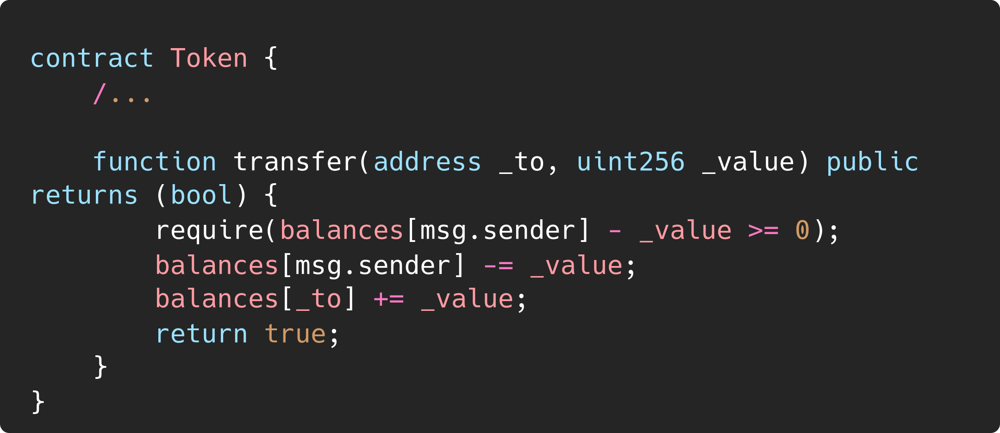
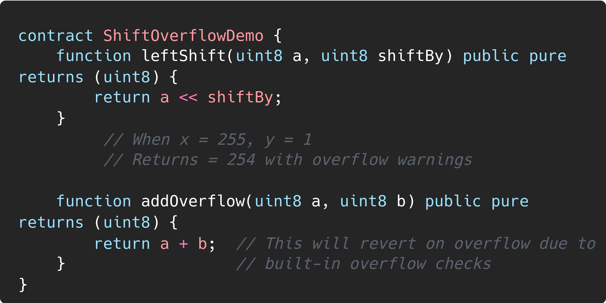
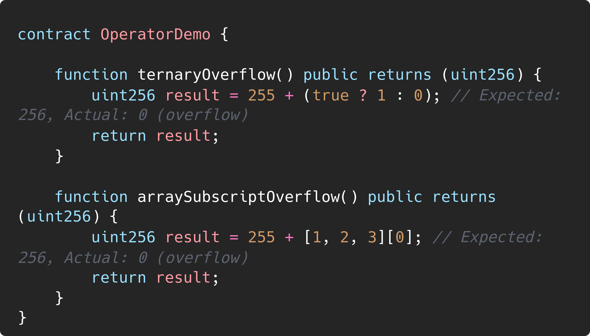

Overflow Bugs in Solidity |
|
| Organization | DeepStack Software Pvt. Ltd. |
|---|---|
| Org URL | https://www.deepstacksoft.com |
Posted on: 2024-09-18
Lets see the below example

In Solidity, shift operations (<< for left shift and >> for right shift) do not perform overflow checks. This is in contrast to arithmetic operations (like addition, subtraction, multiplication), where overflow checks are done in recent Solidity versions (starting from 0.8.0). When performing a shift operation, the result is always truncated to fit within the variable’s data type (e.g., uint256 or int256). This means that bits that “fall off” during the shift are discarded, and no error is thrown if the result exceeds the maximum or minimum representable value.

While most operators produce a literal expression when applied to literals, there are certain operators that do not follow this pattern:
Ternary operator (… ? … : …),
Array subscript (
You might expect expressions like 255 + (true ? 1 : 0) or 255 + [1, 2, 3][0] to be equivalent to using the literal 256 directly, but in fact they are computed within the type uint8 and can overflow.
